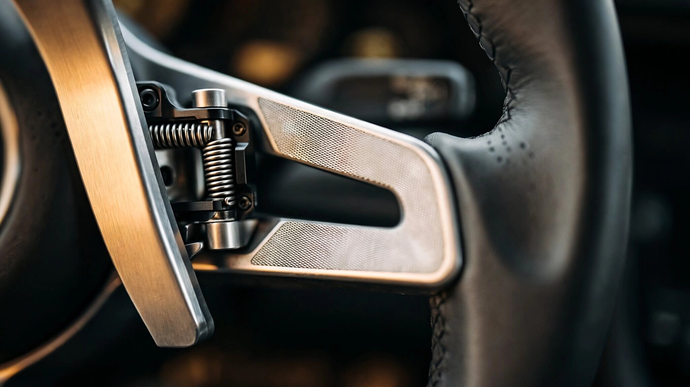

Eight Fake Gears on Top of Two Real Ones: Porsche's E-Shift and the Engineering of Simulated Emotion

Pull the left paddle on the 2027 Porsche Taycan's steering wheel and the car jolts. Not because a synchronizer has engaged a gear set, and not because a clutch pack has clamped. Because a software routine told the rear motor's inverter to interrupt torque delivery for approximately 150 milliseconds, producing a deceleration transient calibrated to feel like a mechanical downshift in a car that has, at most, two physical gear ratios and usually stays in one of them.
Porsche calls the system E-Shift, and it is available on every 2027 Taycan variant, standard on the Turbo GT. It gives drivers eight virtual gears operated through steering-wheel paddles, a rev counter with shift lights, gear-specific drag torque, and a virtual rev limiter that bucks the car if you hold a gear past its simulated redline. Accompanying all of this is a reworked Electric Sport Sound, Porsche's speaker-based audio system, shaped to rise and fall with load and simulated engine speed.
Three years ago, Porsche said it would not do this. Then someone at Weissach drove a Hyundai.
A Gearbox That Already Exists
Before examining what E-Shift adds, it is worth understanding what the Taycan already has, because this is where Porsche's situation becomes genuinely strange.
Every Taycan ever built carries a two-speed automatic transmission on its rear axle. Porsche developed it in-house, and it remains unique among mainstream production EVs. Most electric cars, including every Tesla, every Rivian, every BMW i-series, use a single fixed-ratio reduction gear between motor and wheels. One ratio. No shifting. Simple.
Porsche's unit is a proper transmission with a shiftable planetary gear set that provides a very short first gear at roughly 16:1, delivering nearly 12,000 Nm of wheel torque for launch acceleration. Second gear drops to about 8:1, matching the front axle's single-speed ratio for efficiency and top speed. A single actuator controls both gear speeds, neutral, reverse, and the parking lock, and the entire assembly weighs 17 kilograms while also housing an electronically controlled limited-slip differential.
First gear pulls hard, converting sixteen motor revolutions into one wheel revolution for breathtaking acceleration that the dyno sheets confirm. Second gear is the cruiser, optimizing motor efficiency at highway speed. Launch Control keeps the car in first through most of a standing-start acceleration run, then shifts into second with what Porsche calls a "shift overboost," a brief torque spike that masks the ratio change.
Here is the problem: none of this involves the driver. First gear engages automatically, second gear arrives without asking, and there are no paddles, no intervention, no awareness of the mechanical event happening beneath you. You might as well be riding a conveyor belt that happens to produce over 1,000 horsepower. Porsche built the only real gearbox in the EV segment and then hid it from the person behind the wheel.
E-Shift does not expose this real transmission, and in fact ignores it entirely. Eight virtual gears operate in pure software while the actual two-speed unit continues doing its own thing underneath, shifting when its control logic decides to shift, completely uncoupled from whatever the driver is doing with the paddles. Two layers of transmission logic, stacked, unaware of each other. It is the automotive equivalent of wearing a mechanical watch while also checking the time on your phone.
How You Fake a Downshift at 600 Volts
An electric motor produces peak torque from zero RPM, delivering its output continuously, smoothly, and immediately. No powerband to climb through, no rev range where the engine comes alive, no sweet spot between 4,500 and 7,200 RPM where the exhaust note hardens and the acceleration sharpens. Everything an enthusiast associates with a great engine, the entire sensory vocabulary of acceleration, lives in those characteristics, and an electric motor has none of them.
E-Shift manufactures them through torque shaping at the inverter level. Each of the eight virtual gears maps to a portion of the motor's actual operating range, with the software constraining how much torque is available at each simulated engine speed. Lower gears feel aggressive: stronger pull at high virtual RPM, less at low virtual RPM, mimicking the steep part of a combustion engine's torque curve. Higher gears flatten out, delivering smoother, more linear power, the way a tall ratio on a highway feels effortless in a six-speed manual.
At each gear change, the motor controller executes a brief torque interruption. Magnitude and duration vary by gear, by driving mode, by load, calibrated to produce what Porsche describes as "noticeable gear-shift jerks." Downshifts deliver drag torque that simulates engine braking, with each virtual gear ratio producing a different level of deceleration on throttle lift, exactly the way dropping from fifth to third in a manual creates a sharper compression-braking effect than dropping from fifth to fourth.
Hold a gear past its simulated redline and the system pushes back. Forward momentum hesitates, accelerates unevenly, the car bucking against its own power delivery like an engine bouncing off its rev limiter. It is a convincing impression of mechanical constraint imposed by software on a motor that could, if the constraints were removed, simply continue accelerating without complaint.
Porsche says the transmission mapping and sound characteristics are tailored to each Taycan variant, so a Turbo GT's simulated shifts feel different from a 4S's, with different gear ratios, different torque curves, and different acoustic profiles delivered through eight speakers inside and two outside. Sound changes with load, wheel speed, and the selected virtual gear. Whether this produces a convincing whole or an uncanny facsimile remains to be determined by anyone who has actually driven the car, which, as of this writing, nobody outside Porsche has.
Hyundai Got There First, and Porsche Knows It
Andreas Preuninger runs Porsche's GT division, and when he drove an Ioniq 5 N, his assessment was unequivocal. Delivered to Autocar: the simulated gearbox was "very impressive" and his "biggest takeaway" from the car. Frank Moser, vice president of the 718 and 911 model lines, told Drive.com.au that virtual sounds and gear changes are "the way" for Porsche's electric future. "The customer could decide if he wants to drive in complete silent mode, or he wants to be part of the game."
Hyundai's N e-Shift, which debuted in the Ioniq 5 N in 2023, was the first system to prove that simulated mechanical feedback could transform public perception of an electric performance car, and before the 5 N, enthusiast press coverage of fast EVs followed a predictable script: impressive straight-line speed, boring driving experience, feels like an appliance. After the 5 N, the conversation changed. MotorTrend awarded it Best Tech of 2025. Mac Morrison, their executive editor, admitted it changed his mind about electric cars as enthusiast machines. "You can't say a car like this won't change anyone's mind, because it's factually wrong."
Hyundai's implementation is thorough enough to be startling. N e-Shift maps the dual motors' combined output to eight virtual gears modeled on an eight-speed DCT, with a digital tachometer climbing to a simulated 8,000-RPM redline synced to your choice of three powertrain sounds: "Ignition" replicates a turbocharged four-cylinder, "Evolution" syncs the RN22e prototype's motor whine to lateral g-forces during cornering, and "Supersonic" channels twin-engine fighter jet acoustics through ten speakers. Upshifts interrupt torque while downshifts rev-match with precision that, by every account from every journalist who has driven the car, makes a 641-hp EV feel like a 280-hp hot hatch with a manual gearbox.
It is also, measured purely by acceleration, slower. Half a second to 60 mph disappears into simulated shift pauses. Hyundai's chief engineer Albert Biermann was explicit about the trade-off: "You lose time, but I don't care. It's more fun."
Porsche cared enough to reverse its public position. E-Shift is the direct engineering descendant of Hyundai's work. Credit where it belongs.
Ferrari Says All of This Is Too Fake
Ferrari looked at what Hyundai built and what Porsche adopted, studied both approaches, and said no.
"There is no rev limiter, because it would be too fake to put rev limiters on an architecture that has no limitation in speed," Raffaele de Simone, Ferrari's development test drivers manager, told media at the Luce reveal in Rome. "We don't have a gearbox, but we have something replacing the experience, and actually, even more."
Ferrari's alternative is called Torque Shift Engagement, and instead of simulating a transmission with virtual gear ratios, it uses the traditional steering-column paddles to let drivers select from five power levels. Right paddle delivers more power with less regenerative braking while the left paddle reduces power and increases regen, so pulling left approaching a corner yields approximately 0.33g of deceleration on throttle lift, comparable to engine braking in second gear in a V12, and pulling right on the exit restores full power without shift jolts, without a virtual redline, and without any pretense that gears exist.
Instead of synthesizing engine sounds through speakers, Ferrari embedded a precision accelerometer at the center of the Luce's rear axle that captures the actual vibrations of the electric motors and gear sets under load, then filters, equalizes, and amplifies that signal through a 21-speaker system operating on the same principle as an electric guitar's signal chain: a real physical vibration from the source, processed and projected, rather than a recording triggered by throttle position.
Whether Ferrari's approach is philosophically superior or simply different depends on what you think driving engagement actually is. Porsche and Hyundai bet that drivers want the familiar loop of rev-build, shift, and torque-interruption because that loop is what decades of muscle memory have trained them to associate with a fast car responding to their inputs. Ferrari bets that the loop itself is the wrong abstraction, that what drivers actually want is consequential interaction with the machine, and that you can build new forms of consequence rather than simulating old ones.
Both arguments are defensible. Neither has been settled by anyone who has driven all three cars back to back on the same road.
Toyota Wants You to Stall Your EV
If Porsche and Hyundai simulate automatic transmissions and Ferrari rejects simulation altogether, Toyota occupies the logical extreme: a patent filed in January 2026 describing a simulated H-pattern manual transmission for electric vehicles, complete with a physical clutch pedal and gear lever. Bungle the clutch release and the car stalls. Select the wrong gear and the powertrain lugs and drags. Set off on a slope carelessly and the car rolls backward.
A "virtual torque transmitting capacity changing device," the patent calls it, which is engineer-speak for a simulated clutch connected to an electric motor that has no mechanical use for one. Software calculates a virtual engine speed for each gear and compares it against the physical gear selection and clutch pedal position, and if there is a mismatch, motor torque cuts to zero while the brakes apply, leaving the car stopped dead at a green light with a perfectly functional 300-kilowatt powertrain disabled because software decided you would have stalled a 1996 Corolla.
Toyota prototype versions ran in a Lexus UX300e as early as 2022. A Subaru-contributed patent adds what it calls a "jackrabbit start suppression device," preventing launches that exceed what a clutch-and-flywheel system could deliver. This is engineering explicitly designed to make a car worse at its primary function in service of emotional satisfaction. It is gloriously, perhaps absurdly, committed to the premise that what people miss about driving is not effortless speed but the possibility of getting it wrong.
Lexus assistant chief engineer Yasuyuki Terada identified an unexpected obstacle: "In Japan, your driver's license, you have to qualify to get a manual transmission license. So if we offer that system and you can turn it on and off, which license is that car allowable?" Nobody has started talking about the regulatory implications of a car that can optionally require skills most new drivers no longer possess.
What This Actually Tells Us
Four manufacturers, four approaches, one shared confession: electric powertrains optimized the driving experience into something that, by almost every measurable dimension, surpasses combustion, and in doing so removed the very things that made people love cars in the first place. Noise, vibration, the sequential ceremony of managing a gearbox, the climb of revs toward a redline, the satisfaction of getting the shift timing right. All of it was waste. All of it was friction. All of it was also the point.
Porsche's E-Shift is an honest concession from an engineering-led company: our customers want to feel something, and the most efficient path to that feeling runs through familiar mechanical metaphors, even if those metaphors are enacted entirely in software on top of hardware that makes them unnecessary. Whether you find this clever or absurd depends on how comfortable you are with the idea that a 1,000-horsepower machine can be improved by making it briefly, deliberately, less smooth.
Sales numbers suggest the urgency is real. Porsche delivered 16,339 Taycans in 2025, less than half the 41,296 it sold in 2021. Range anxiety faded. Charging infrastructure improved. Performance credentials were never in doubt. What remained was a car that many drivers found technically excellent and emotionally flat. E-Shift is Porsche's admission that the deficit was not in the spec sheet.
Hyundai proved the concept. Porsche refined the packaging. Ferrari rejected the premise and built something genuinely new. Toyota is patenting the ability to stall a car that has no engine to kill. Somewhere in this spectrum lies the correct answer to a question the auto industry is only beginning to ask seriously: what does a great car feel like when the machinery that used to generate that feeling no longer exists?
Nobody knows yet. But four very different companies are spending real money to find out, and the fact that all of them arrived at some form of deliberate imperfection, of engineered friction, of voluntary inefficiency in service of human connection, suggests that the smooth, silent, maximally efficient EV was never the destination. It was just the first draft.